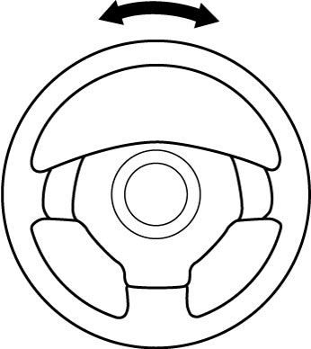

4F
| Steering Angle Sensor On-Vehicle Inspection |
1)Connect SUZUKI scan tool to DLC (1) with ignition “OFF”.


 "Expand image")
2)Calibrate steering angle sensor. 
3)Set ignition “ON” and select “DATA LIST” of SUZUKI scan tool.
Refer to Operator’s Manual of SUZUKI scan tool for further details.
Refer to Operator’s Manual of SUZUKI scan tool for further details.
4)Check “Steering Angle Sen” under “DATA LIST” of SUZUKI scan tool in the following steering wheel conditions.
•Front wheels are in straight ahead position.
•Rotate steering wheel once clockwise from straight ahead position.
•Rotate steering wheel once counterclockwise from straight ahead position.
Replace steering angle sensor if check result is not as specified.
•Rotate steering wheel once clockwise from straight ahead position.
•Rotate steering wheel once counterclockwise from straight ahead position.
Steering angle specification
| Vehicle condition | Steering angle |
|---|---|
| Front wheels in straight ahead position | 0 ± 3° |
| Rotate steering wheel once clockwise | 360 ± 3° |
| Rotate steering wheel once counterclockwise | –360 ± 3° |

 "Expand image")